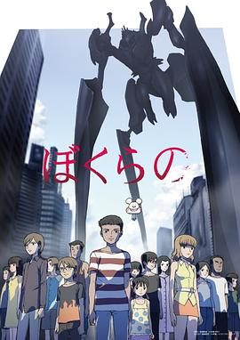

地球防卫少年 / ぼくらの
又名：我们的 / Bokurano
作品信息
| 导演 | 森田宏幸 / 川畑荣郎 / 林直孝 / 御厨恭辅 / 下司泰弘 / 小林孝志 / 柳沼和良 / 关野昌弘 / 三原武宪 / 冈村正弘 / 畠山茂树 / 粟井重纪 / 菊池胜也 / 信田祐 |
| 编剧 | 鬼头莫宏 / 川崎裕之 / 大知庆一郎 |
| 主演 | 皆川纯子 / 阿澄佳奈 / 野岛健儿 / 三瓶由布子 / 牧野由依 / 能登麻美子 / 浅沼晋太郎 / 比嘉久美子 / 宫田幸季 / 藤田圭宣 / 井口裕香 / 杉田智和 / 保志总一朗 / 阪口大助 / 东地宏树 / 石田彰 / 川岛得爱 |
| 类型 | 科幻 / 动画 |
| 制片国家/地区 | 日本 |
| 语言 | 日语 |
| 首播 | 2007-04-08(日本) |
| 集数 | 24 |
| 单集片长 | 24分钟 |
| IMDb | tt1132201 |
说过什么
2021-06-01 14:18:29
广播 · 想看
最后一次看到是 2026-08-01T11:09:02+10:00 · 豆瓣原页